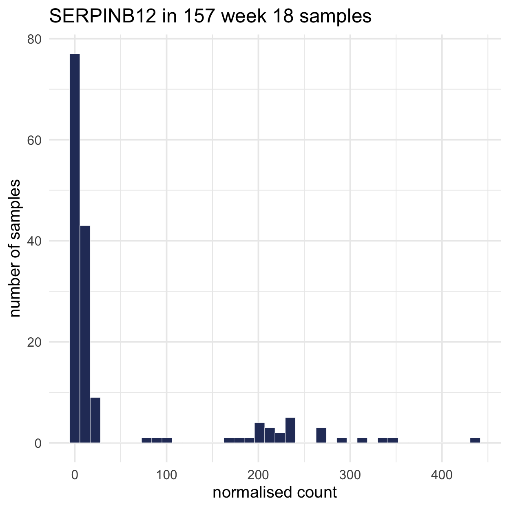
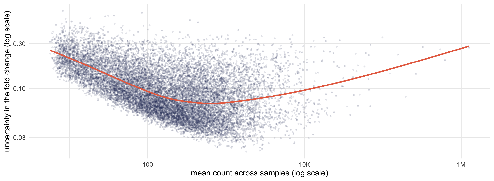
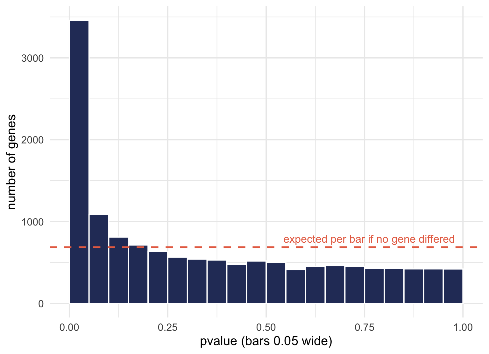
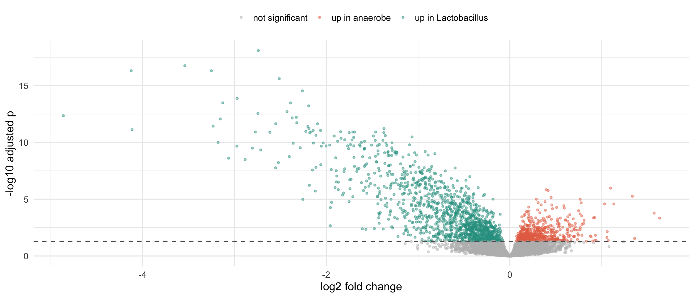
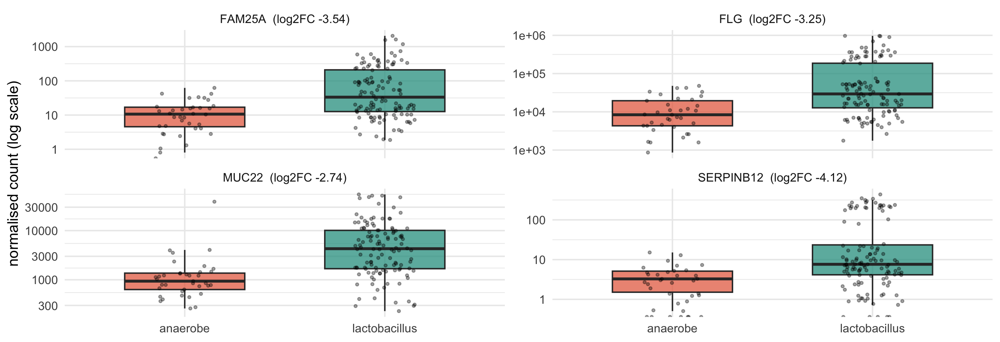
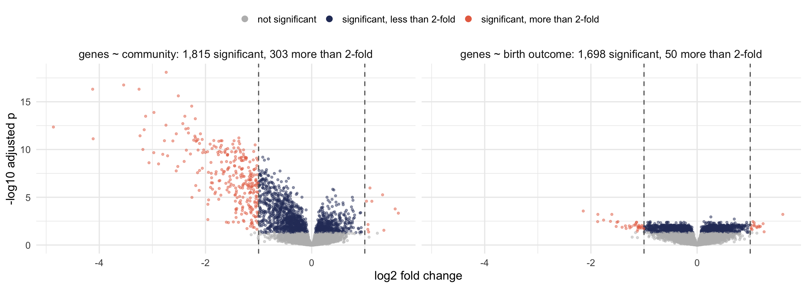

| community | n |
|---|---|
| anaerobe | 37 |
| lactobacillus | 120 |
Workshop 2, Module 3
| community | n |
|---|---|
| anaerobe | 37 |
| lactobacillus | 120 |
These are the week 18 samples only, one per person.
You built community from the species table. Now we test the gene table with it.
For each feature, is its count systematically different between two groups of samples?
In the gene table we ask it about 14,000 times, once per gene.


Fold changes for low-count genes are much less certain. A method built for counts uses this trend to borrow information across genes.
Give it raw counts, never CPM and never logged values. DESeq2 does its own normalisation, and feeding it normalised data breaks it.
DESeq()A toy gene in three samples. Sample C was sequenced twice as deeply.
| sample | raw | size factor | normalised |
|---|---|---|---|
| A | 50 | 0.79 | 63 |
| B | 48 | 0.79 | 60 |
| C | 100 | 1.59 | 63 |
Dividing by the size factor puts the three samples back on one scale.
| gene | baseMean | log2FoldChange | stat | pvalue | padj |
|---|---|---|---|---|---|
| MUC22 | 6710 | -2.74 | -9.9 | 5.9e-23 | 8.2e-19 |
| FAM25A | 128 | -3.54 | -9.5 | 2.5e-21 | 1.7e-17 |
| FLG | 98986 | -3.25 | -9.3 | 1.4e-20 | 4.8e-17 |
| SERPINB12 | 46 | -4.12 | -9.3 | 1.1e-20 | 4.8e-17 |
| EDN2 | 177 | -2.51 | -9.1 | 8.8e-20 | 2.4e-16 |
log2FoldChange of 1 means twice as much, and -1 means half as much.pvalue is per feature, before any correction.padj is what you report.If no gene differed at all, how many would have pvalue below 0.05?

About 687, one in every twenty genes. The spike in the first bar is the real signal sitting on top of that.
That is why padj exists. Benjamini-Hochberg controls a different error: of the features you call significant, roughly 5% are wrong.

| gene | name | log2FoldChange |
|---|---|---|
| MUC22 | mucin 22 | -2.74 |
| FAM25A | family with sequence similarity 25 member A | -3.54 |
| FLG | filaggrin | -3.25 |
| SERPINB12 | serpin family B member 12 | -4.12 |
| EDN2 | endothelin 2 | -2.51 |
| XKRX | XK related X-linked | -2.26 |
| ALOX12 | arachidonate 12-lipoxygenase, 12S type | -2.97 |
| LCE3D | late cornified envelope 3D | -3.13 |
| ESAM | endothelial cell adhesion molecule | -2.39 |
| CNFN | cornifelin | -2.19 |
Mucins, filaggrin and cornified envelope proteins are epithelial barrier genes, and all of these are higher where Lactobacillus dominates. We did not put that pattern there; it came with the real samples.

Every fold change here is negative, and every boxplot is higher on the Lactobacillus side, so the picture and the sign agree.
Getting the direction of a contrast backwards is the most common error in this analysis. Nothing warns you and the table looks normal, so it regularly survives peer review.
A boxplot of the top gene, like the one on the last slide, shows the direction at a glance.
| contrast | features tested | samples | padj < 0.05 | and |log2FC| > 1 |
|---|---|---|---|---|
| genes ~ community (from the 16S table) | 13,738 | 157 | 1,815 | 303 |
| genes ~ birth outcome | 13,738 | 157 | 1,698 | 50 |
| genes ~ Nugent-defined BV | 13,721 | 97 | 7 | 3 |
| species ~ birth outcome | 53 | 157 | 19 | 19 |
Compare the first two rows: a similar number of significant genes, and a very different number of large changes.

Community moves a few hundred genes a long way. Birth outcome moves a great many genes a little.
Friday we come back to this: thousands of significant genes, and still a poor prediction of who delivers early.
| grouping | samples | genes at padj < 0.05 |
|---|---|---|
| Lactobacillus fraction, computed from the 16S table | 157 | 1,815 |
| Nugent score of 7 or more, read down a microscope | 97 | 7 |
Both groupings ask whether the community is disturbed. The one built from data you already have finds hundreds of times as many genes.
We used DESeq2 on both tables, because the point this week is that both tables are count tables. Not everyone does that.
| for gene counts | for microbial counts |
|---|---|
| DESeq2, edgeR | ALDEx2, ANCOM-BC |
| limma-voom | MaAsLin 2, corncob |
| DESeq2, still, often |
The microbiome tools exist because that table is compositional and sparse in a way gene tables are not. The case for them is worth reading before you publish a microbiome analysis.
communityYou built community from the species table, so testing the gene table with it is fine.
Testing the species table with it is circular. You would be asking whether samples with lots of Lactobacillus have lots of Lactobacillus.
| species | log2FoldChange | padj |
|---|---|---|
| Gardnerella swidsinskii leopoldii | 3.58 | 3.8e-08 |
| Prevotella amnii | 5.14 | 3.8e-08 |
| Fannyhessea vaginae | 2.95 | 8.1e-06 |
| Gardnerella vaginalis | 3.16 | 1.1e-05 |
| Prevotella sp 1 | 4.33 | 2.0e-05 |
19 of 53 species are significant, and 18 of them are higher in the people who delivered early.
Open notebooks/03-differential.qmd.